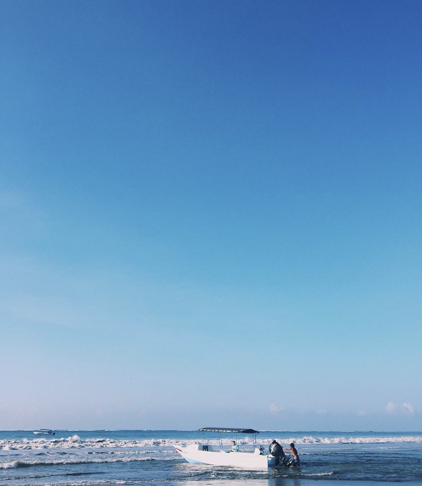

Hello, I am Samuel!
Welcome to my page! I am a student of the community college of baltimore county and i major in Information Technology! i have crafted this page to show you three out of so many things i enjoy doing. life is beautiful! " la vida es para los vivos" i enjoy every thing nature and lifestyle, i have been priviliged to visit a couple countries and i am a proud Nigerian.
Feel free to dive in! click on the slides above to see my three things.
